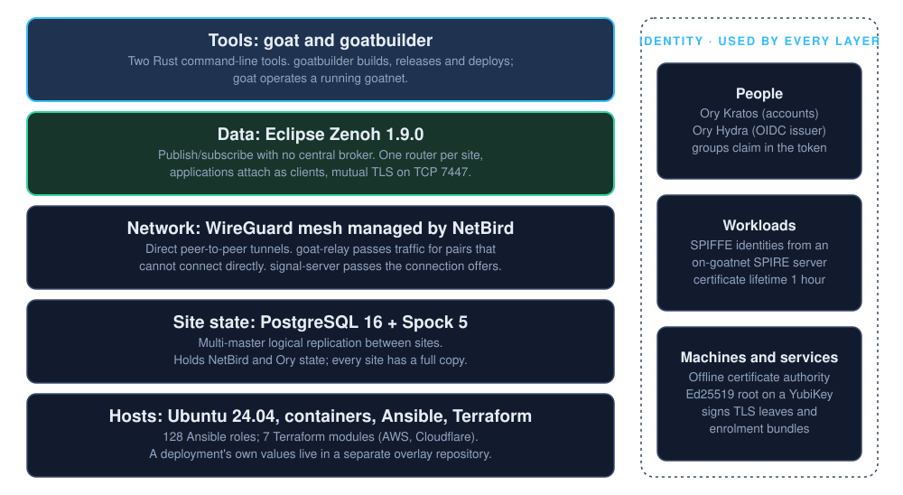
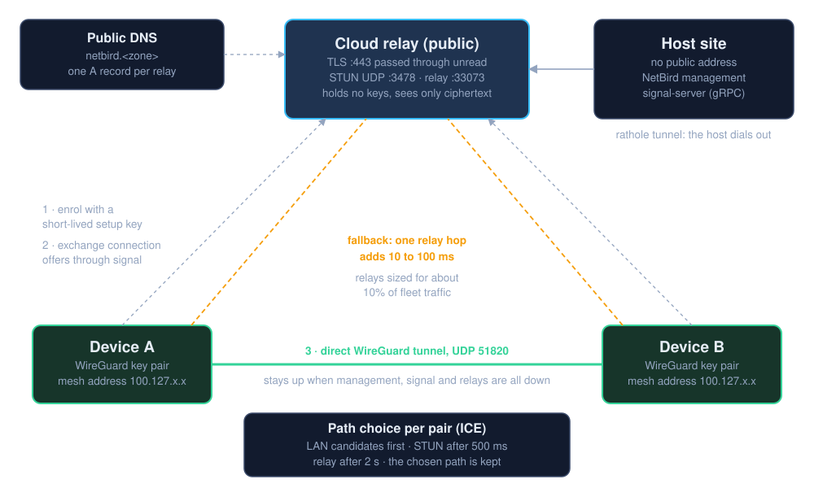
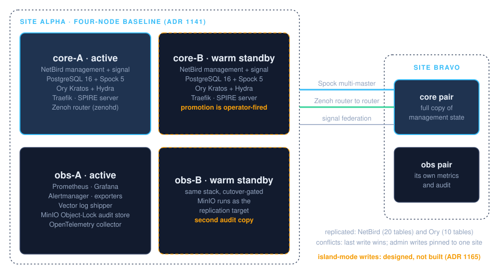
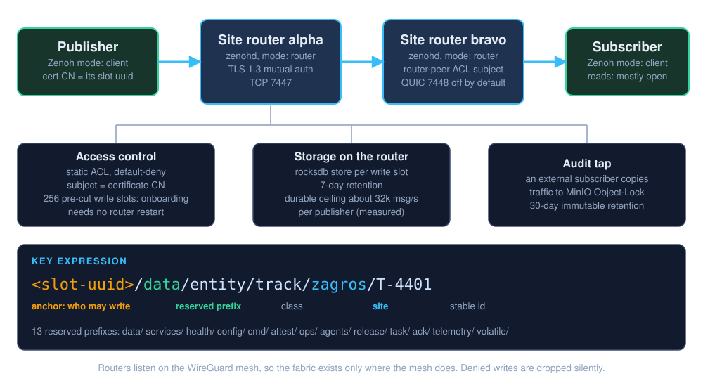
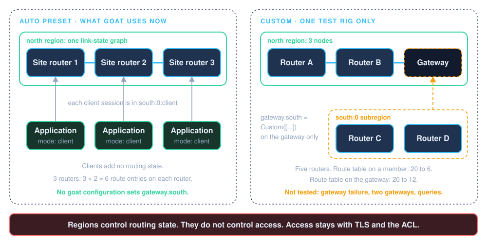
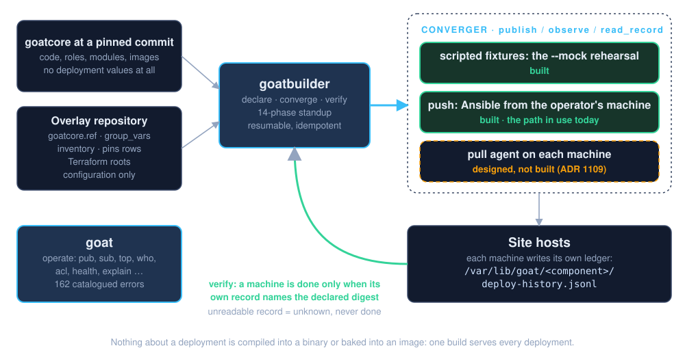

Scope and evidence
| Type of statement | Basis |
|---|---|
| Structure, versions, pins, defaults, file contents | Read from the source. First read at commit 706cdde (2026-11-09). Updated for the 24 commits to cbf2cb7f (2026-11-11). |
| Throughput, latency and memory numbers | From the measurement references of the repository (M-nnn). Not measured again for this note. |
| Maturity of each part | The status words in docs/design/ headers and in docs/adr/. Compared with the code where they looked incorrect. |
| Operation of the software | No software was built, deployed or run for this note. |
The repository has 204 files in docs/design/ and 355 decision records. Most secondary documents were read at the header and the important sections only. For section 11, goatstuff and zagros-moon-pod were read from the source by assistant agents, and selected statements were checked again. goatdocs, goatenv and goat-client were not read in full.
goatbuilder federate verbs, declared peerings, a stricter acceptance test, and corrections for two peerings on one host (goat 0.5.19). Release: a new runtime-health gate. Supply chain: a manifest allowlist and no front-end build step. Governance: no bypass of required checks on main.Layers, and what this repository contains

| Area | Upstream, exact version | Written in this repository |
|---|---|---|
| Network | WireGuard; NetBird management 0.68.3 with 7 patches (ops/netbird/patches/) | goat-relay + goat-relay-protocol (Rust), signal-server (Go) |
| Data | Eclipse Zenoh =1.9.0; the PQ-hybrid image is the default | Portal (ops/goat-zenoh-portal, Go), ingress gateway, grant-crypto, panoscope-core, goat-fed-republisher |
| Identity | Ory Kratos 1.3.1, Hydra 2.3.0; SPIRE 1.11.2 | Offline CA and enrolment tools (ops/enrollment), ID console, consent UI |
| Site state | pgEdge PostgreSQL 16 + Spock 5; pgBackRest 2.58.0 | Partition harness, revocation guard, consistency checks |
| Operate and deploy | Ansible, Terraform (AWS and Cloudflare providers only), Traefik v3 | goat 0.5.19, goatbuilder 0.4.3, goat-federation (Rust), 128 Ansible roles, 7 Terraform modules |
goatnet.toml, Ansible group_vars, an environment variable, or a mounted file. If a value is missing, the tool stops with an error from ops/errors/catalog.yaml. A real deployment is goatcore at a pinned commit and a separate overlay repository that contains configuration only (AGENTS.md).Network: join through a relay, then connect directly

- Enrol. The device resolves the public name
netbird.<zone>(one A record for each relay). It opens TLS on 443 at a cloud relay. The relay does not read the traffic. It passes the traffic through rathole to the NetBird management of the host site. A setup key with a short life, or PKCE SSO, admits the device. Host sites have no public address (ADR 1192). - Signal. The peer keeps one stream to one signal server. Connection offers use the same 443 path.
- Select a path. ICE for each pair: host (LAN) candidates first, STUN candidates after 500 ms, relay after 2 s. The selected pair stays for the life of the connection. There is no second evaluation (ADR 0306).
- Fallback. One relay hop on 33073. The relay sees only ciphertext. Relays are sized for approximately 10% of the fleet traffic and add 10 to 100 ms.
| Public on each cloud relay | Purpose |
|---|---|
| TCP 443 | haproxy in TCP mode, TLS passthrough to management. The relay has no keys. |
| TCP 2333 | rathole control. The management host makes the outbound connection. |
| UDP 3478 | STUN (Coturn) |
| 33073 | goat-relay: WebSocket over TLS at /relay, and QUIC datagrams |
In the mesh: WireGuard peer-to-peer on UDP 51820, mesh addresses in 100.127.x.x, signal gRPC on 10000, CoreDNS on 5353. DNS has two tiers. Public Cloudflare DNS has the enrolment names. A mesh CoreDNS zone comes from the service registry, and NetBird pushes it as a nameserver group (ADR 0312). There are one or three CoreDNS replicas (built).
198.18.0.0/24) with no public DNS. Entry needed a bundle signed by the offline CA. ADR 1192 (Accepted, 2026-09-28) paused this design. No goatnet uses it, and its servers were removed. docs/design/control-plane-hiding-explainer.md says that it is in use. Read the README statement "nothing sensitive faces the internet" as follows: services listen only on the mesh, and relays pass ciphertext.goat-relay and signal-server
goat-relay
- Cause. The Go relay had a limit of 25 to 32 Mbps for one flow, and 5 Mbps at 16 streams. Direct TCP between the same hosts reached 330 Mbps. The team wrote the new relay from a written wire specification, to prevent AGPL obligations.
- Structure.
goat-relay-protocolonly parses and serializes.goat-relaydoes the I/O. - Wire format. 2-byte header. Message types include Transport
0x03(36-byte peer ID + payload), HealthCheck0x05and Auth0x06. Maximum 8820 bytes. - Authentication. Timed HMAC-SHA256 tokens, optionally bound to the peer ID. 60 s tolerance for clock difference. Current and previous secret. Without
GOAT_RELAY_AUTH_SECRETthe relay refuses all (goat-relay/src/auth.rs, ADR 1053). - Performance design (built). One pinned thread and one single-threaded tokio runtime for each core, with no work stealing (
src/shard.rs).SO_REUSEPORTshards. Optional CBPF steering by source IP. kTLS and io_uring on Linux. - Not built. Tier 2 (AF_XDP, hardware crypto) is an experiment. The anycast relay tier is a design only (ADR 0221 Proposed).
signal-server
- A new Go implementation of the NetBird
SignalExchangegRPC. Thus standard clients work without a change. It addsSignalFederation.Forward: if a peer is not local, it sends the message to the signal servers of the other sites (ADR 0302). - Federation transport has two paths through a local
federation-proxy: the mesh IP of the peer first, and a public hostname through the relay tunnel as backup. A partition test passed, with approximately 240 ms on the backup path and a 30 s breaker interval (ADR 1085, Amendment 1). - Protection against storms: a 20 s negative cache and a rate limit for each sender. Environment flags control them. The default for the two is off.
A site, and its state

| Subject | Design | Status |
|---|---|---|
| Standby | core-B and obs-B are warm standby nodes. An operator starts the promotion. VRRP failover was removed. | Service classes with a cutover gate: built. Promotion runbook: planned. |
| Replication between sites | Spock 5 multi-master logical replication: NetBird (20 tables) and Kratos/Hydra (10 tables). SPIRE is not replicated, by design. | Built (ADR 0801 Accepted) |
| Conflicts | The last write wins, by commit timestamp. This is safe because one site makes all administration writes (ADR 1084 D3). | Built |
| Not replicated | Portal and console state is in SQLite. Invitations are in process memory. | Known gap |
| Island mode | No quorum is necessary (ADR 0206). Today a second site with no connection can enrol peers and accept logins. It cannot make administration changes. | Writes at all sites: designed, not built (ADR 1165). 126 write paths; 31 have no class. |
| Drift detection | Spock, an ACE diff each hour, a reconciler each day. | Daily reconciler: Proposed |
| Backup | pgBackRest, two independent local stanzas for each site, AES-256-CBC. Full each week, differential each day, incremental each 6 hours, 4 weeks of point-in-time recovery. | Recovery after total loss: 4 to 8 h expected, not measured |
| Memory | Full stack 12.7 GiB RAM. Core tier approximately 1.6 GiB (Zenoh router 885 MiB). | Measured |
Services have four criticality tiers (core, essential, utility, nicety). Continuous chaos tests and combined-failure scenarios are designs only. No measured chaos results were found.
Data fabric: Zenoh through routers, by decision

- Topology (built). One
zenohdfor each site inmode: router. Applications are inmode: client. The path is pub → site router → site router → sub. The design document gives the reason: the router has the storage, the static ACL and the audit tap. Operation of peers without a router is designed, not built (ADR 1095). - Transport. TLS 1.3 with mutual authentication on TCP 7447. The goatnet CA issues the certificates. QUIC on UDP 7448 is available and is off by default. The hybrid
X25519MLKEM768key exchange is built: +180 µs for each handshake and approximately 1.2 KB more data. - Isolation. A site with no connection keeps its local publish and subscribe.
Key expressions
<anchor>/<reserved-prefix>/<class…>/<site>/<stable-id>
<slot-uuid>/data/entity/track/zagros/T-4401
reserved: data/ services/ health/ config/ cmd/ attest/ ops/ agents/
release/ task/ ack/ telemetry/ volatile/A writer can write only below its anchor prefix (<uuid>/** or <vendor>/**). Put values that change with each message in the payload, not in the key. Only named certificates can subscribe to the literal **. The equivalent */** is detected but not blocked.
Access control
- Enforcement. The static
access_controlof the router. It denies by default. The subject is the certificate CN.roles/goat-zenohrenders it from group_vars. The router reads it only at start. The router gives no message for a denied write. - Slot pool (ADR 1025, Proposed but in use). The role makes N write slots in advance (default 256). Onboarding makes a certificate with the uuid of a free slot as its CN. Thus no restart is necessary. This is optional for new goatnets. The role default is
zenoh_identity_model: "per-vendor". - Reads are open to most members. Read partitions for partners and write grants for release lanes are built.
- Encryption for machine reads. One AES-256-GCM data key for each release set, wrapped to the member certificates (
grant-crypto, ADR 1094, built). - warrant is not the fabric ACL. warrant makes the NetBird mesh ACL. That ACL controls IP access to port 7447.
Storage and measurements
| Item | Value | Status |
|---|---|---|
| Router storage | rocksdb for each anchor or each active slot, 7-day TTL | Built |
| Audit | An external subscriber writes to MinIO Object-Lock, 30 days | Built |
| Routing throughput | approximately 1.2M msg/s | Measured (M-054) |
| Durable limit | approximately 32k msg/s for each publisher. Above this, the router drops messages and gives no message, because rocksdb runs on the routing thread. | Measured (M-054) |
| Latency | median 53 to 55 ms at 12 Hz on zagros | Measured |
| Volatile class | Blobs in chunks of ~1.5 MiB, 100 MiB limit; a 50 MiB round trip was verified | Code merged; long test not done |
| Replay system, skeleton for stateful consumers | ADR 0825 | Not built |
Zenoh regions: goat uses the default

Zenoh 1.9.0 puts each session in a region. The region decides how much routing state the session adds. The source is the section "Hierarchical routing — gateway.south and regions" in docs/design/zenoh-data-fabric.md.
| Region | Shown as | Meaning |
|---|---|---|
| North | north | The main region. Its members share one link-state graph and one all-pairs route table. |
| South | south:<id>:<mode> | An indexed subregion below one router. Its members add no state to the north graph. |
| Local | local | Sessions in the same process. |
The Auto preset (in use)
The config key is gateway.south. Its default is Auto. No goat role sets this key. With Auto, the region depends only on the modes of the two sessions.
| This node | Remote node | Region of the session |
|---|---|---|
| router | router | north |
| router | client | south:0:client |
| router | peer | south:0:peer |
| peer | peer | north |
| client | client | The session is refused |
Result: all site routers share one flat north region. Each application is a client, thus it adds no routing state. A router in a north region of V nodes has V(V−1) route entries. ADR 1160 says that each goatnet has one populated region with 3 nodes or fewer.
Custom regions (not in use)
Custom([...])is an ordered list of subregions. A peer goes into the first subregion whose filters match. The region id is the list index.- A filter has five fields:
modes,interfaces,zids,region_names,negated. The peer assertszidsandregion_namesabout itself. - Set
Customon the gateway only, and keepAutoon its members. This is the supported configuration. - If the two ends disagree about the region, Zenoh refuses the session. It does not operate with decreased routing.
- Test rig (M-112): five routers, one gateway, one south subregion. North V changed from 5 to 3. The route table changed from 20 to 6 at a member, and from 20 to 12 at the gateway.
zids or region_names as a critical hazard (T-001).zenohd config change, not new code". It gives no sizing rule and makes no statement about queries across a region boundary. Gateway failure and two gateways for one subregion were not tested.The effects of "no broker"
docs/design/zenoh-brokerless-consequences.md is on the "read first" list of the repository. No component gets all messages. Thus some usual corrections are not possible.
| You cannot have | What goat does | Status |
|---|---|---|
| A central priority queue | The producer, the relay and the mesh reserve, show and apply priority. Four classes, C0 to C3, bound to the key prefix. | Designed, not built (ADR 1033) |
| Broker acknowledgements, retries, a dead-letter queue | The producer is responsible for delivery: acknowledged query and reply, AdvancedPublisher cache. | Cache tested; DLQ rejected |
| ACL changes at runtime, "revoke now" | Slot pool for grants. To stop a device immediately, delete its NetBird peer. | Built |
| CRL or OCSP for fabric certificates | None, by design. Leaf certificates are valid for 365 days. Thus removal from the mesh is the control. | Native revoke: Proposed (ADR 1031) |
| A refusal message for a denied write | Test before use with goat acl test. Monitor expected and actual traffic. A producer can test itself. | Built |
| Throughput limits at a broker | Limits are declared in the portal and shown in goat top. | Declare and show: built. Enforce: not built. |
Identity: six credential planes
The README gives three identity technologies. The reference (identity-access-and-onboarding-reference.md §0) describes six credential planes. One plane does not authenticate a different plane.
| Plane | Credential | Issuer | Use |
|---|---|---|---|
| People (web) | OIDC token with a groups claim | Ory Kratos (identity), Hydra (issuer), patched consent UI | Web consoles, panoscope |
| Fabric | X.509 client certificate, CN = slot uuid or vendor, 365 days | Portal certmint | Zenoh mTLS on 7447. The ACL reads the CN, not the URI-SAN. |
| Mesh | WireGuard key | NetBird, by setup key or PKCE SSO through Hydra | Tunnel membership. A rosenpass PSK adds PQ protection. |
| Workloads | SPIFFE X.509-SVID. SVID 1 h, agent 360 h, CA 2160 h | SPIRE server on the goatnet | The router admits it by CN ("Phase A live on ZAGROS") |
| Service TLS and bundles | Leaf certificates (1 year); signed CBOR enrolment bundles | Offline CA: Ed25519 root (10 years), YubiKey PIV in production, one tier | Internal TLS; enrolment of devices and people |
| CLI | Portal bearer token | Portal | Operator power only if the token is in PORTAL_OPERATOR_API_KEYS |
Onboarding of a person (the one path in use, built)
- The person sends an invite token. A sponsor confirms. An administrator approves.
- The onboard-runner runs
goat admin onboard --native. It makes a NetBird setup key, then a Zenoh slot, certificate and portal key, then a Kratos identity. - The result is a signed
.cborbundle (ECDSA P-256 on canonical CBOR) and a welcome email.goat profile initopens the bundle.
Tiers: browse, developer, iam-admin, platform-admin. Operator power needs a separate procedure, and a different administrator must approve it.
Offline device enrolment, post-quantum, external ICAM
- Offline enrolment (design complete, implementation partial). A signer with no network makes a CBOR bundle of 400 to 600 bytes. Activation in 14 days, expiry in 90 days. The bundle CRL refreshes each 60 s. An old CRL can be used for 24 h. At 72 h the system refuses all. With no connection to management, this needs a local management server, which is not in scope today.
- Post-quantum. Hybrid X25519MLKEM768 on Zenoh TLS and QUIC, rosenpass on NetBird. A switch (
goat client pqc on|off,goat admin pqc … --peer|--fleet) changes the two layers at runtime (built 2026-07-17). The router has no runtime switch. - External ICAM. A card or IdP subject maps to a native UUID. The registry is
ops/identity/sovereign-pkis.yaml. Three ingress modes are built and are off by default. Enforcement of assurance levels is designed, not built.
Deployment: declare, converge, verify

goatbuilder
- Verbs (
crates/goatbuilder/src/main.rs): validate, doctor, status, deploy, preflight, release, rollback, fastlane, standup, teardown, join-node, federate, pins, promote, explain, tutor, secrets, verify, diff, history, plan/apply, adopt, assay, endstate, survey, update. - Converger trait (
converger.rs):publish,observe,read_record. Built: scripted fixtures (--mock <dir>) and Ansible push (push.rs). Not built: the pull-agent converger. It is only an enum value. - Deploy contract C1 to C10. C7: a machine is converged only when its own record shows the declared digest and shows that the run is complete. Today the record is the ledger on the host,
/var/lib/goat/<component>/deploy-history.jsonl. - Standup. 14 idempotent phases. You can continue with
--from/--to. The phases include gates, host baseline with LUKS, secrets and certificates, the management stack, relay and TLS, two operator stops, ACL, services, an acceptance gate. A parity gate compares it with the older shell script. One hour is "a target, not a claim". - End state. A catalog of 58 services. Each service gets a grade: deployed, active, healthy, functional (built, measured).
- Rollback. 1 to 7 steps by artifact type. The tool refuses data changes, certificate changes and forward-only changes. Measured on a development goatnet.
Release ladder and the new runtime-health gate
- A candidate goes up a ladder of rungs (for example dev, preprod, prod). Gates control each hop.
- New on 10 November (commit 87a27353): the
runtime-healthgate. It examines how the component operated on the lower rung during the soak period. - Pass criteria: restarts = 0, OOM kills = 0, peak memory ≤ 80% of the container limit. A value that the tool cannot read is a failure. An override must give a person and a reason.
ops/release/ladder.yamlin the repository has no rungs. Thus the repository does not show a use of this gate.
docs/design/fleet-management.md is Proposed and says "Nothing in §7 is built" and that actuation is "Push-only". ADR 1109 is Proposed. What is built is an Ansible push from the operator machine, and the ledger on the host that verify, diff, history and survey read. Convergence of a node with no connection: none.The goat CLI
- Command groups. Identity and context (profile, ca, context, init, who, access). Fabric (pub, sub, blob, topic, schema, acl, replay, flow). Health (doctor, health, status, top, presence, heal, names). Administration (admin, vendor, machine, warrant, audit, federate). Learning (tutor, hello, demo, explain, docs).
- Errors. 162 catalog entries (22
E_*, 97GB-NNN, 43X-TOOL-NNN), compiled into the binaries. Thusexplainworks with no network. - 31 locale directories (Fluent). Machine output does not change with the locale. Self-update with a checksum.
goat federatenow prints a notice. The federation verbs will move togoatbuilder federate(ADR 1225).
Profiles
| Profile | Structure | Status |
|---|---|---|
| goatlite | One Ubuntu 24.04 host (4 cores, 16 GB), a goatlite.yaml with four values, no relays, no cloud, the same 14 phases in the LAN profile | Works from start to end on new VMs (approximately 24 min of phase time); "never for production" |
| Founder site | Two core nodes + two observability nodes (+ break-glass) | Built |
| Joiner site | Same goatnet, replication in two directions, signal federation (join-node) | Built |
| Boundary node for a partner | One edge router for each partner that denies by default, and a republisher on the core (federate) | ADR 1157 Proposed; see section 10 |
Supply-chain checks (new)
manifest-allowlist(commit aae90492): CI refuses a build manifest or package manifest that is not inops/ci/manifest-allowlist.txt. Eachpackage.jsondependency must have an exact version.- The smoketest dashboard is now plain JavaScript with no build step. Preact, TypeScript and Vite were removed.
- ADR 1221: the contributor-trust check is required on
mainin all public repositories. Required approvals: 0. No bypass. A required check that fails or does not start blocks the merge.
Federation between sovereign environments

Federation connects two sovereign goat environments. Each nation operates its own environment, with its own CA and its own mesh. A nation does not join the mesh of a different nation. Data crosses only when its owner releases it.
The four steps (the same on each side)
| Step | Function | Mechanism |
|---|---|---|
| 1 · Reachability | One dedicated tunnel between the two edge hosts. It is not on a NetBird mesh. | WireGuard, or IPsec if the partner requires it |
| 2 · Trust material | Each side gets the public CA bundle of the other side. No private key moves. | SPIRE federation, with automatic refresh |
| 3 · Identity | The partner router shows a certificate with an agreed Subject CN. | SPIRE X.509 SVID |
| 4 · Permission | One dedicated zenohd for each partner. It trusts only the CA of that partner. | Standard Zenoh, a second configuration profile |
Components
- Core router. The usual router of the environment. It does not trust the partner CA.
- Edge router. One
zenohdprocess for each partner, inmode: "router". It listens with mTLS. Gossip and multicast scouting are off. Its ACL denies by default. It can apply a rate limit (downsampling) and a size limit (low_pass_filter) to partner ingress. - Republisher (
goat-fed-republisher, Rust, on the core host). It subscribes torelease/<set>/**and publishes each sample again asfrom/<us>/<set>/**. It is the only writer of those keys for its peering. If you stop it, our data stops on that peering. - Peering forwarder (ADR 1218, optional). A small host with a public address, for the condition where no edge can accept inbound connections. It has no keys and joins no network.
- Peering directory (
saltlick). The two sides exchange signed packages and CA certificates through it. It is a cache only. It grants no access.
Data flow (outbound)
- An application publishes to
release/weather/forecast. This is the staging name. - The republisher publishes the sample as
from/zagros/weather/forecast. This is the wire name. The rule: remove the first path segment and addfrom/<our sovereign id>/. - The core ACL lets the edge read only the wire keys of the offered sets.
- Our edge sends the sample through the tunnel to their edge.
- Their edge ACL permits
putanddeletefrom our CN only belowfrom/<us>/**. - Their edge passes the sample to their core. The key does not change.
The inbound flow is the same in the opposite direction. Partner data arrives below from/<them>/**.
Rules
- Origin. The prefix
from/<sovereign>/and the peering CN are the only origin proof that is enforced. The Zenoh source ID crosses the hop, but no component verifies it. - DATA grants and INTEREST grants are different. DATA grants list each offered set. INTEREST grants keep the full
from/<us>/**. If an interest grant is narrower, Zenoh refuses the subscriber declaration. Then all links are up but no data crosses (measured in the three-party test). - Transit (ADR 1224, Proposed). Released data goes one hop. It goes farther only if the receiver releases it again, or if the owner marks it as a "general release".
- Three access levels. Recognised: we hold the partner bundle. Connected: tunnel and TLS are up, and no ACL rule matches the partner. Exchanging: an ACL block for the partner CN is active.
- End of a peering. One side removes the partner from the tunnel on its own edge host. It does not need the other side.
- FIPS. The Zenoh TLS session carries the FIPS claim, not the tunnel. The two edge routers must use the FIPS fabric image.
The procedure
Each side makes a signed package that describes itself. The two packages compose into one agreement with one digest. Each side renders its configuration from that agreement. The six package verbs are init, lint, compose, diff, verify, apply. apply only writes files. The driver has 14 phases. Two phases stop for a person:
- Phase 5. The packages go through the directory. The two operators read the key fingerprint and the CA fingerprint aloud on a call.
- Phase 10. An operator examines what
applyrendered before the core router restarts.
Other phases: 1 preflight, 3 package build on the core host, 6 compose, 8 certificates, 11 tunnel, 12 edge router and republisher, 13 SPIRE federation, 14 acceptance with a round trip for each offered set.
What is on main now
ADR 1225 says that the first federation between two separately administered environments was on 9 November 2026. The operator set 19 environment variables manually and copied files between hosts. Commit 28492160 (10 November, +16,196 lines) starts the change to one command.
| Item | Content | Status |
|---|---|---|
| Library crate | crates/goat-federation: package format, lint, compose, diff, verify, render. goat and goatbuilder use it. | On main |
goatbuilder federate verbs | The six package verbs, with the same flags and exit codes as goat federate | On main. In-process use is optional (FED_VERBS=goatbuilder). |
| Declared peerings | A schema, an allocator (tunnel interface, ports, link subnet), rendered files, forwarder configuration from the declaration | On main |
| Certificates on the edge | The edge role installs the peering certificates | On main, optional |
| Host firewall | Role goat-host-firewall for the peering hosts | On main, optional |
| Acceptance test | Exit code 3 if a check is skipped. A versioned evidence bundle. Checks come from the agreement. | On main; the exit code is the default |
| Two peerings on one host | Eight changes. Before, the edge of partner B could read a set that was agreed with partner C only. Preflight now refuses a shared name, interface, port or address. The WireGuard key goes to wg through stdin. | goat 0.5.19; three-party test added |
Roadmap (ADR 1225, decision 7; not on main)
| Stage | Content |
|---|---|
| 6, 6.1 | goatbuilder federate plan: planner and preflight. Phase 8 finds the CA key automatically. |
| 9 | Phase 3 runs through SSH from the operator machine. No binary or key is copied to the edge. |
| 11 | Directory: one package for each counterparty. |
| 12 | The one-command surface: deploy, test, status, approval bound to the plan hash, journal, locks, resume. |
| 13+ | Changes of default, one for each pull request. The last change removes goat federate. |
| 14 | Runbook and tutorials. |
Related repositories

goatstuff (at 7dbda25): the optional layer
goatstuff contains inspection tools, health publishers, synthetic data producers, teaching demonstrations, and their Ansible roles. Its README says that you do not need it to operate a goatnet. It uses the panoscope-core crate at tag goatcore/v0.1.0. Tag v0.2.0 is available, and the update is not merged.
| Tool | Stack | Function |
|---|---|---|
| panoscope | Rust axum, plain JS, d3 | Shows the full goatnet. Subscribes to ** and polls the admin space each 5 s. The most complete tool. |
| stethoscope | Rust | Six passive health checks through the portal API and the S3 audit bucket. It opens no Zenoh session. |
| flashlight | Rust, wasm | Sends a live Zenoh tail to the browser through SSE. |
| netvis | Rust, plain JS | Shows the NetBird mesh ACL as a matrix. |
| microscope | Rust | A read-only view of one entity across NetBird, Kratos, Hydra and the audit systems. |
| goat-topology | Rust, protobuf | Reads the admin space of the local router and publishes the routing topology and regions (section 6). |
| Health publishers, audit-subscriber | Rust | Publish health to ops/…/health/<site>. The audit subscriber writes NDJSON to MinIO. |
| trashgoat, loadgen, synth-vendor | Rust | Chaos, load and synthetic data for tests. |
| trust-sandbox, zenoh-sandbox, gym | Mixed | Teaching material. |
Known gaps: the README descriptions of stethoscope, flashlight and microscope do not agree with the code. No test connects to a real Zenoh router or to NetBird.
zagros-moon-pod (at c67d185): a pod for a partner
- It is a deployment scaffold: one compose file, bring-up scripts, a router configuration template, and client examples. It builds no binaries.
- The partner starts a standard
eclipse/zenoh:1.9.0router and an audit subscriber on the partner hardware. The router dials out through NetBird to the sandbox goatnet "zagros". - goatcore ADR 0223 says that a moon pod is a learning tool for an exercise environment. The operational path between nations is federation (section 10).
- On
main, the pod ACL has one subject: any mTLS peer. It does not use the CN. - On
main, a wildcard subscriber on the fabric does not get the data that goes out through the pod router. The correction is in the branchfix/2586-router-forwarding, which is not merged. - The audit subscriber stores no data. Thus the pod does not supply the 90 days of audit that its contract document requires.
Other repositories
open-billie is a sensor node platform that publishes tracks (CoT, ASTERIX CAT062, SAPIENT) to Zenoh. octo-pod is an edge appliance for equipment that cannot join a fabric. The folders explainer-billie and explainer-octopod contain their pages. saltlick is the peering directory. goatenv is an example environment. The hello-galaxy-* repositories are 14 tutorials.
goatdocs, docs/design/engineering-baseline.md, section 12.4. The reason is npm supply-chain risk.Built, designed, and where documents and code disagree
| The document says | The code or a later decision says |
|---|---|
| README: machines pull their configuration | fleet-management.md: push only, nothing in §7 is built; the pull agent is an enum value |
control-plane-hiding-explainer.md: the hidden control plane is in use | ADR 1192: paused, wg_cp0_enabled = false |
signal-server/README.md: scaffold, handlers not implemented | internal/server/ implements exchange, federation, negative cache and rate limit |
| Presence sync "designed-not-built" | presence.go and a --presence-sync flag are in the code (default false) |
| Portal README: SIGHUP reloads the router ACL | Its adminrest.go and the design document: no effect in Zenoh 1.9.0 |
| Design document: the router binds the mesh IP | Role default goat_zenoh_listen_host: 0.0.0.0; operator override and port map |
| Internal TLS CA document: no intermediate CA | ops/enrollment/x509ca/intermediate.go is in the code |
pgbackrest.md, node topologies: automatic VRRP failover | ADR 1141: VRRP removed |
| ADR 0112: a small web UI uses TypeScript and Node | The engineering baseline and the new CI check: plain JavaScript, no build step |
| ADRs 1025, 1109, 1157, 1198, 1213, 1225 "Proposed" | Their code is built and in use, to different degrees |
Reading rule. Trust the code and the newest ADR more than the header of a design document. Look in docs/adr/INDEX.md for a later decision before you use one document.
The repository
check-* scripts in ops/ci; you can run each one locally; 91 workflows- Gates. A leak gate compares added lines with a private list of deployment names and does not print the match. Each commit must be signed and verified (ADR 1226). cargo-deny, CodeQL, trivy. Shell scripts must run on bash 3.2. Design documents must change with the code.
- Releases. cosign with no long-life key, on
SHA256SUMS. linux-amd64, linux-arm64, darwin-arm64.RELEASE-CONTENTS.mdmarks the Terraform modules and the standup on real hosts as "Not run" in CI. - You supply. Ubuntu 24.04 hosts with disk encryption, a secret store, a CA, a pins row, group_vars and inventory. For internet access: an AWS account, a Cloudflare zone and a domain.
- Observability. Prometheus, Grafana, Alertmanager, exporters. Vector sends OCSF events to Object-Lock MinIO. An OTel collector. Health data on the fabric supplies
goat top,goat healthandgoat status.
Reading sequence
docs/tutorials/00-goatlite.md, then the README mock standup: a system in operation quickly.docs/design/zenoh-data-fabric.mdandzenoh-brokerless-consequences.md: the data model and its limits.docs/design/goatbuilder.mdandcrates/goatbuilder/src/converger.rs: the deployment contract.docs/design/identity-access-and-onboarding-reference.md: the credential planes.docs/operations/sovereign-federation-runbook.mdandops/federation/republisher/README.md: federation.- ADR 0206, 0306, 0709, 0801, 1025, 1141, 1157, 1160, 1192, 1224, 1225: the reasons for the design.
Files that this note uses
README.md, AGENTS.md, docs/RELEASE-CONTENTS.md; docs/adr/ 0206, 0218, 0223, 0302, 0306, 0312, 0709, 0712, 0801, 0844, 1020, 1025, 1053, 1084, 1085, 1094, 1109, 1141, 1157, 1160, 1165, 1192, 1198, 1206, 1213, 1218, 1221, 1224, 1225, 1226; docs/design/ zenoh-data-fabric, zenoh-brokerless-consequences, zenoh-loadtest, zenoh-qos-and-prioritization, zenoh-pqc-tls, federated-trust-model, federation-package-spec, identity-access-and-onboarding-reference, internal-tls-ca, offline-enrollment, island-mode-multi-writer, island-mode-write-inventory, service-criticality-tiers, goatbuilder, goatlite, fleet-management, goatnet-end-state, scale-validation-plan, control-plane-storm-resilience, netbird-relay-wire-protocol; docs/operations/sovereign-federation-runbook.md; ops/federation/republisher/README.md; code in crates/goatbuilder/src, crates/goat-cli/src, crates/goat-federation/src, goat-relay/src, signal-server/internal, ops/ansible/roles/goat-zenoh, ops/ansible/roles/goat-zenoh-edge, ops/ansible/roles/spire, ops/postgres/spock, ops/errors/catalog.yaml; the commit messages of 706cdde..cbf2cb7f. Other repositories: goatstuff at 7dbda25 and zagros-moon-pod at c67d185.